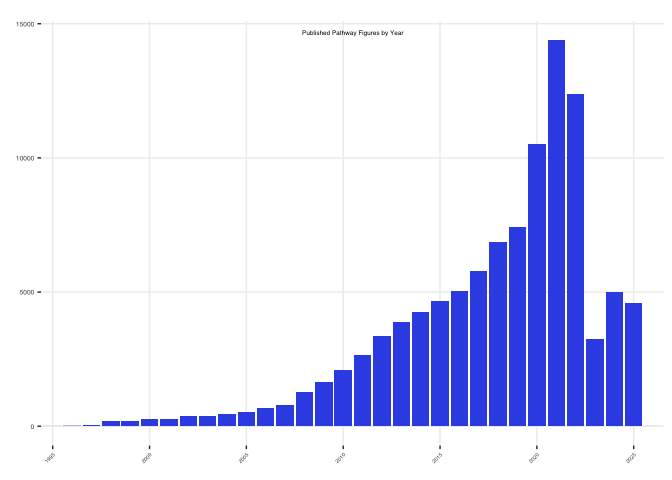

PFOCR Stats
This R notebooks prepares counts and figures to summarize PFOCR activity. The output files are displayed on the website and used in publications and grant applications.
- Data points are collected in _data/
- Plots are saved in assets/img/
Read PFOCR .rds files
Set the path to these files
Read in files
figs <- readRDS(file.path(local.path,"pfocr_figures.rds"))
genes <- readRDS(file.path(local.path,"pfocr_genes.rds"))
chems <- readRDS(file.path(local.path,"pfocr_chemicals.rds"))
dis <- readRDS(file.path(local.path,"pfocr_diseases.rds"))
Contents and counts
papers <- figs %>%
distinct(pmcid)
papers_hs <- figs %>%
dplyr::filter(grepl('Homo sapiens',organisms_ner)) %>%
distinct(pmcid)
figures_hs <- figs %>%
dplyr::filter(grepl('Homo sapiens',organisms_ner)) %>%
distinct(figid)
ncbigenes <- genes %>%
distinct(ncbigene_id)
ncbigenes_hs <- genes %>%
dplyr::filter(organism_id == 9606) %>%
distinct(ncbigene_id)
chemicals_mesh <- chems %>%
distinct(mesh)
chemicals_chebi <- chems %>%
distinct(chebi)
diseases_mesh <- dis %>%
distinct(mesh)
diseases_doid <- dis %>%
distinct(doid)
fig.num <- nrow(figs)
paper.num <- nrow(papers)
fig.hs.num <- nrow(figures_hs)
paper.hs.num <- nrow(papers_hs)
gene.total <- nrow(genes)
gene.unique <- nrow(ncbigenes)
gene.hs.unique <- nrow(ncbigenes_hs)
chem.total <- nrow(chems)
chem.unique.mesh <- nrow(chemicals_mesh)
chem.unique.chebi <- nrow(chemicals_chebi)
di.total <- nrow(dis)
di.unique.mesh <- nrow(diseases_mesh)
di.unique.doid <- nrow(diseases_doid)
data <- data.frame(Total = c(gene.total,chem.total,di.total), Unique = c(gene.unique, chem.unique.mesh, di.unique.mesh), Specific = c(gene.hs.unique, chem.unique.chebi, di.unique.doid))
row.names(data) = c("Genes", "Chemicals", "Diseases")
The Pathway Figure OCR project has identified 103009 pathway figures from 87705 published papers.
| Total | Unique | Specific | |
|---|---|---|---|
| Genes | 4,426,921 | 146,866 | 18,383 |
| Chemicals | 335,939 | 13,979 | 4,085 |
| Diseases | 44,434 | 1,602 | 201 |
Contents extracted from figures
Main page plot
years.plot <- figs %>%
dplyr::filter(!is.na(year)) %>%
group_by(year) %>%
dplyr::summarize(fig_cnt = n())
min.year = min(years.plot$year)
max.year = max(years.plot$year)
years.plot %>%
ggplot(aes(x=factor(year, levels = seq(min.year, max.year)), y=fig_cnt,
fill = case_when(
year == max.year ~ "no",
year < max.year ~ "yes"
))) +
geom_bar(stat="identity") +
ggtitle("Published Pathway Figures by Year") +
xlab("") +
ylab("") +
scale_x_discrete(breaks = factor(seq(min.year,max.year,by=5)), drop=FALSE) +
scale_fill_manual(values = c("yes" = "#3955E7", "no" = "#7995F7" ), guide = "none" ) +
theme(axis.text.x = element_text(angle = 45, hjust = 1, size = 4),
axis.text.y = element_text(size = 5),
text = element_text(size = 4, , family="Helvetica", face="plain"),
panel.grid.major = element_line(color="#eeeeee"),
plot.title = element_text(hjust = 0.5,vjust = -15),
panel.background = element_rect(fill='transparent'), #transparent panel bg
plot.background = element_rect(fill='transparent', color=NA), #transparent plot bg
panel.grid.minor = element_blank(), #remove minor gridlines
legend.background = element_rect(fill='transparent'), #transparent legend bg
legend.box.background = element_rect(fill='transparent') #transparent legend panel
)

ggsave("../assets/img/pfocr_stats.png", plot = last_plot(),
width = 550, height = 300, units = "px", dpi = 250, bg='transparent')